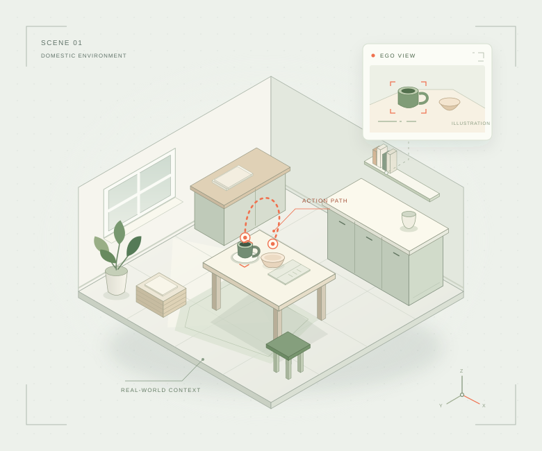
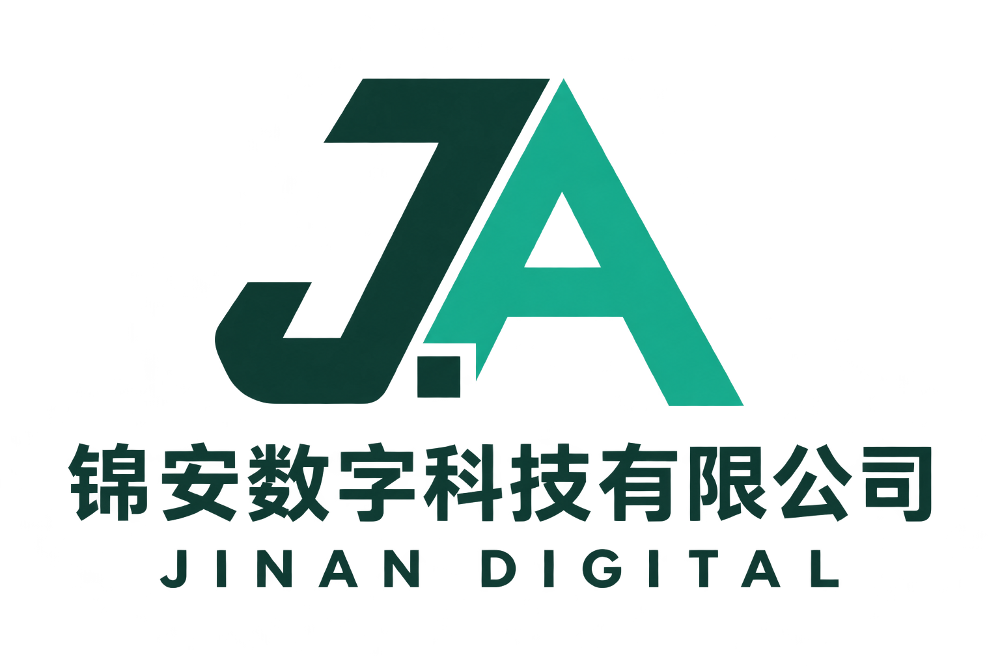

真实场景数据采集
围绕居家取放、桌面整理、物品收纳等任务，按客户约定采集动作与第一视角素材。
连接社区里的真实生活，
组织具身智能所需的动作与第一视角数据。
从一项任务、一个场景开始，让采集有标准，让协作有秩序。

WHAT WE DO / 服务能力
面向具身智能项目，围绕采集执行这一环节，
把任务要求落实到场景、人员和每一次设备交接。
围绕居家取放、桌面整理、物品收纳等任务，按客户约定采集动作与第一视角素材。
统筹人员培训、任务排班和设备交接，跟进进度与异常，减少协作中的信息断点。
将验收要求前置到任务说明与样例验证，记录批次状态，配合问题定位和返工闭环。
SCENE EXPLORER / 场景探索
切换任务场景，了解一次采集如何展开。
以下为任务设计示例，实际范围以项目确认为准。
EVERYDAY MANIPULATION
在清晰、稳定的桌面场景中，记录物品从起点到目标区域的完整操作过程。
HOW WE WORK / 协作方式
明确任务类型、设备要求、场景边界与数据格式。
试采少量样例，确认采集规范与验收口径。
落实操作培训、设备交接与任务安排。
跟进采集进度、问题记录和必要返工。
按约定渠道交付，核对结果，再评估扩量。
THE WAY WE CARE / 质量与边界
把任务规范、参与者隐私和设备责任，
一起放进采集流程。
任务目标、有效数据口径与返工规则，先沟通、再执行。最终交付以双方确认的验收标准为准。
采集前明确授权范围；避免旁人入镜，移开证件、屏幕隐私与家庭敏感物品。授权之外的素材不复用。
以交接记录核对配件、设备状态与任务进度，出现异常及时暂停和反馈。
数据通过客户指定或双方约定的渠道上传与交付，保存周期、访问权限和删除安排由项目协议明确。
ABOUT JINAN / 关于锦安

锦安数字科技有限公司以无锡为运营起点，围绕真实场景数据采集，探索可持续的社区协作方式。
我们关注的是具体的执行：一次培训是否清楚、一台设备是否准时交接、一段数据是否符合任务要求。通过小规模试点验证流程，再逐步完善组织与交付能力。
COLLECT WITH US / 社区采集合作
面向无锡社区，了解居家采集的参与方式。
具体任务、设备安排与报酬规则，在项目启动前说明。
FAQ / 合作问答
涉及家庭或桌面操作的 UMI、Ego 第一视角采集项目，可以先提供任务说明与设备要求。我们会一起评估场景适配、人员组织和试点安排，具体可执行范围以评估结果为准。
当前以项目制采集服务筹备与试点洽谈为主，暂不在本网站提供现成数据集下载或售卖。客户授权范围之外的数据不会转售或复用。
设备型号、提供方式、使用授权、数据格式与验收规则，需要在启动前由双方书面确认。设备兼容性和任务可行性通过样例采集验证。
根据任务复杂度、场景要求、质量标准、设备条件和预计规模综合评估，样例验证后再确认正式计划。本网站不承诺固定单价、产量或验收通过率。
目前处于筹建与试点准备阶段，可先了解参与条件。实际招募以明确的项目需求为准，劳动安排、报酬和结算规则会在参与前书面说明。
LET’S START / 开始合作
先告诉我们任务场景与设备要求，
再一起评估怎样迈出试点的第一步。
项目合作 · 采集员咨询
查看原始名片 ↗使用微信或企业微信扫描二维码联系锦安。
也可生成项目需求清单，通过企业微信发送。